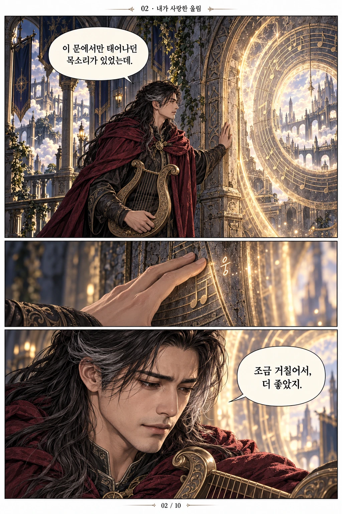
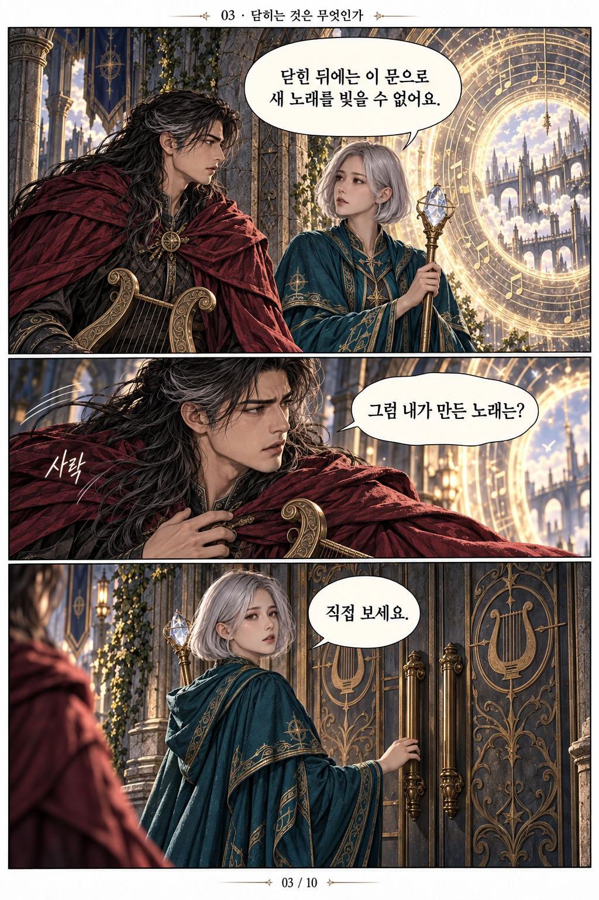
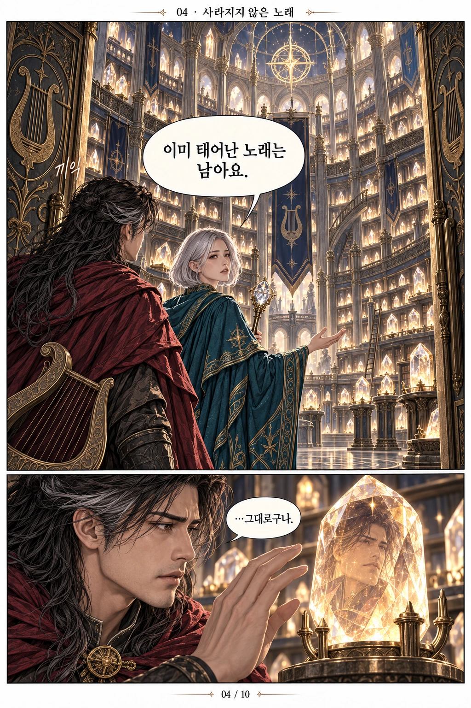
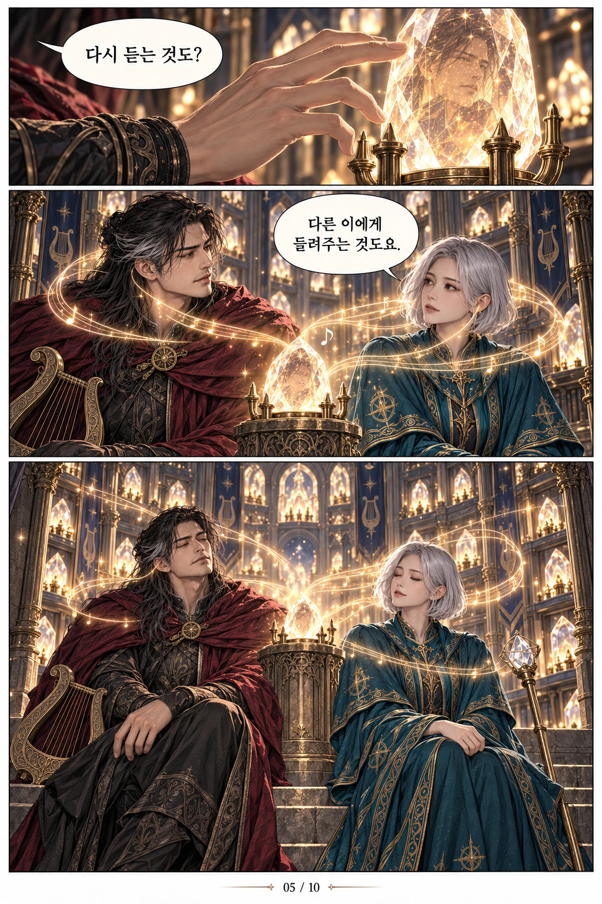
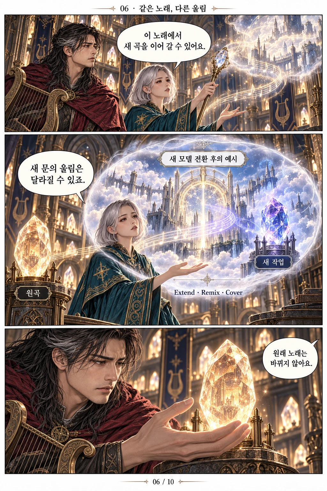
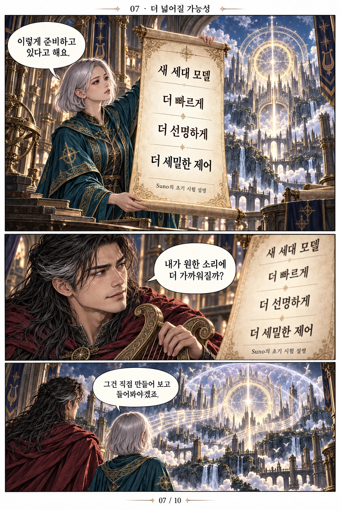
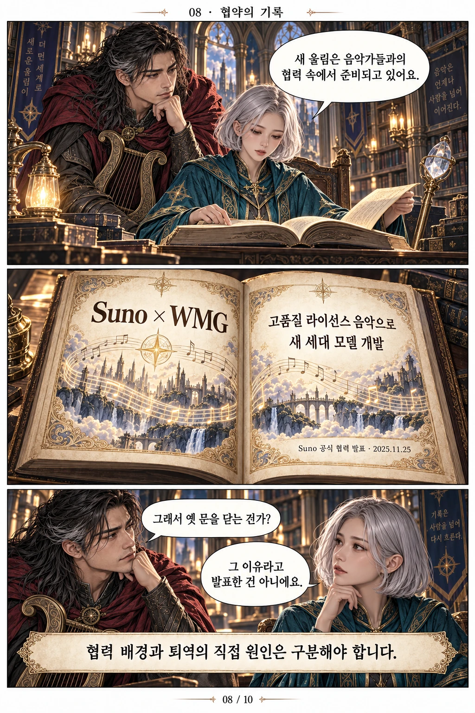
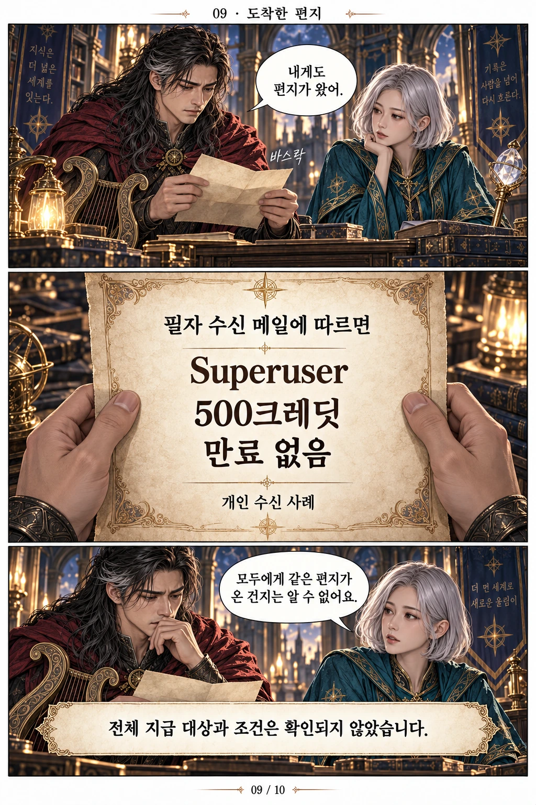
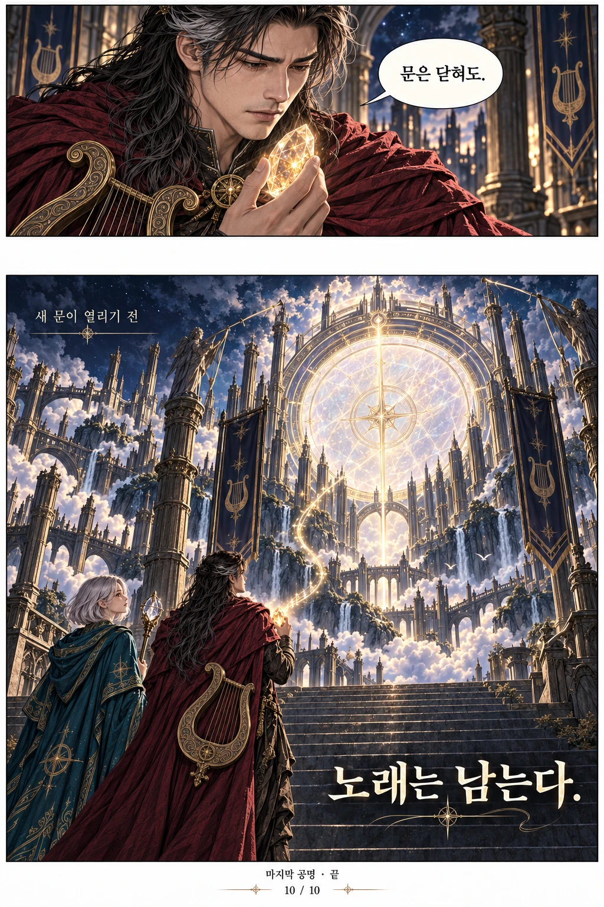

새 시대의 예고
1장 대사 읽기
마지막 공명
Suno 새 세대 모델 전환 예고
새 문이 열리는 날, 옛 소환문은 모두 닫힙니다.
공식 예고를 바탕으로 한 판타지 비유
라온 · 공명의 음유시인
내가 좋아하던 울림도?
세린 · 기억의 기록관
FANTASY WEBTOON
음유시인 라온과 기록관 세린.
사라질 문과 남겨질 노래를 따라가는 열 장의 이야기.
마지막 공명
Suno 새 세대 모델 전환 예고
새 문이 열리는 날, 옛 소환문은 모두 닫힙니다.
공식 예고를 바탕으로 한 판타지 비유
라온 · 공명의 음유시인
내가 좋아하던 울림도?
세린 · 기억의 기록관
낯익은 목소리가 태어나던 곳.

이 문에서만 태어나던 목소리가 있었는데.
웅…
조금 거칠어서, 더 좋았지.

닫힌 뒤에는 이 문으로 새 노래를 빚을 수 없어요.
그럼 내가 만든 노래는?
사락
직접 보세요.
닫히는 것은 문. 사라지는 것은 아니다.

이미 태어난 노래는 남아요.
끼익
…그대로구나.

다시 듣는 것도?
다른 이에게 들려주는 것도요.
같은 기억에서 시작해도, 새로운 울림이 된다.

이 노래에서 새 곡을 이어 갈 수 있어요.
새 모델 전환 후의 예시
새 문의 울림은 달라질 수 있죠.
원곡
새 작업
Extend · Remix · Cover
원래 노래는 바뀌지 않아요.

새 세대 모델
더 빠르게
더 선명하게
더 세밀한 제어
Suno의 초기 시험 설명
이렇게 준비하고 있다고 해요.
내가 원한 소리에 더 가까워질까?
그건 직접 만들어 보고 들어봐야겠죠.

새 울림은 음악가들과의 협력 속에서 준비되고 있어요.
Suno × WMG
고품질 라이선스 음악으로 새 세대 모델 개발
Suno 공식 협력 발표 · 2025.11.25
그래서 옛 문을 닫는 건가?
그 이유라고 발표한 건 아니에요.
협력 배경과 퇴역의 직접 원인은 구분해야 합니다.
하나의 편지. 모두의 조건은 아니다.

내게도 편지가 왔어.
바스락
필자 수신 메일에 따르면
Superuser
500크레딧
만료 없음
개인 수신 사례
모두에게 같은 편지가 온 건지는 알 수 없어요.
전체 지급 대상과 조건은 확인되지 않았습니다.

문은 닫혀도.
새 문이 열리기 전
노래는 남는다.
마지막 공명 · 끝
문은 닫혀도, 노래는 남는다.
LYRICS
낡은 문에 귀를 대면
처음의 내가 들려
조금 거친 그 숨결에
이름을 맡겼지
문틈은 좁아지고
손끝은 머뭇대네
문은 닫혀도
노래는 남는다
나를 깨운 그 떨림
아직 여기 있다
더 높이 열린 아침
낯선 울림 너머
닳아 버린 한 음이
발걸음을 잡네
다시 빚을 수 없는
그 목소릴 품고
아직 부르지 않은
내일 앞에 선다
문은 닫혀도
노래는 남는다
나를 깨운 그 떨림
아직 여기 있다
문은 닫혀도
노래는 남는다
처음 나를 부른 너
내 안에서 울려라
울려라
BEHIND THE STORY
새 모델 하나의 추가를 넘어, 앞으로 새 노래를 만들 수 있는 모델의 선택지가 달라지는 변화입니다.
Suno는 새 세대 모델 출시와 함께 모든 기존 모델을 퇴역시키겠다고 예고했습니다. 이후에는 구형 모델을 선택해 새 노래를 만들 수 없습니다.
기존 곡은 삭제되지 않으며 재생과 공유도 계속 가능합니다. 모델의 퇴역과 곡의 보존은 서로 다른 이야기입니다.
기존 곡을 Extend·Remix·Cover의 출발점으로 사용할 수 있지만, 새 작업은 새 모델에서 처리되므로 결과가 달라질 수 있습니다. 보관된 원곡 자체가 바뀌는 것은 아닙니다.
Suno는 초기 시험에서 속도·음질·음악 제어력이 좋아졌다고 설명합니다. 이는 회사의 설명이며, 실제 결과는 출시 후 직접 만들어 들어보아야 알 수 있습니다.
Suno는 WMG와의 협력 발표에서 고품질 라이선스 음악을 활용한 새 세대 모델 개발을 밝혔습니다. 다만 라이선스 문제 때문에 구형 모델을 퇴역시킨다고 직접 발표한 것은 아닙니다.
필자는 Superuser로서 만료되지 않는 500크레딧을 받았다는 메일 수신 경험을 전했습니다. 원본 메일은 이 기사에서 공개하지 않았으며, 전체 지급 대상과 조건은 확인되지 않았습니다.